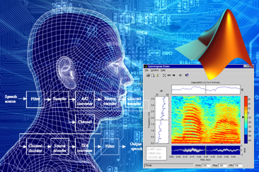

TicketFun is an interactive web page for users to search events and purchase tickets utilizing AJAX technology (HTML, CSS and JavaScript). I Created Java servlets with RESTful APIs to handle HTTP requests and responses. I not only built relational but also NoSQL databases (MySQL, MongoDB) to capture event data from TicketMaster API. The recommender system adopted the popular content-based collaborative filltering that Amazon use now. I Deployed server to Amazon EC2 to handle 150 queries per second tested by Apache JMeter.
VisualLog is a geo-location based log visulization tools. I built a search engine using ElasticSearch to collect logs from remote environment (crash report, abnormal behaviors, errors, usages). Utilized Logstash to build a dynamic and real time pipeline for log reporting and transforming (geoip, filtering etc.) Visualized logs with Kibana to analyze and track root cause of system crashes and resource burndown. Created a dashboard with visualizations of users’ geo-locations in U.S. Processed and analyzed 1GB log data from a recommendation application.
ELK CSS
SixDegree
SixDegree is a program to generalized Kevin Bacon trivia game and verify Six Degree Theory. Take as input any two actors/actresses and find the shortest sequence of shared movies between them with BFS algorithm and implemented with C++. Write a program that starts with one actor in the graph and adds new movies step-by-step to find the earliest movie year to connect the start actor to the destination actor. Objected-Oriented design an efficient graph and up-tree data structure used for union-find algorithm to optimize runtime to one fifth of the original BFS method. Adjust the program to make a Facebook network research with the captured data from UCSD students and faculties.
C++
Query AutoComplete
Query auto complete is a prgramme implemented by a multi-way trie (MWT) and a ternary search tree (TST) data structure for all the phrases in dictionary in C++. Implement auto-complete functionality of the variety found in almost all text-based applications. Compare the empirical running time of MWTs or TSTs , Balanced Binary Search Trees and Hash Tables to their expected analytical running times. Research and compare the performance of different hash functions for strings.
C++
Huffman Compress Suit
Huffman compress suit is a tool implemented by Huffman code file compressor and decompressor in C++. Implement Huffman's algorithm using efficient supporting data structures to support encoding and decoding ASCII 1's and 0's, as well as short files. Extend the basic I/O functionality of C++ to include bitwise operations to support actual compression and decompress.
C++
Yelp Raters
Yelp Raters is a tool to help businees improve on costomers ratings on Yelp. I created a linear regression model with 27 features to predict the rating a user would assign to a business. Hierarchical clustered business by K-means algorithm and detected user communities with the use of clique percolation. Replaced bigram features with high-dimensional TF-IDF scores and evaluated cosine similarity between different users. Optimized traditional featured-based classifier to Latent Factor Model; Ranked 27/453 among all the teams.
Python
Speech Coder

Speech coder is a program implementing a detector to divide frames into voiced and unvoiced parts based on zero crossing rate. Non-uniformly quantized signal using the Lloyd algorithm with training data collected from real speech signals. Computed the filter parcor coefficients by solving autocorrelation normal equation through Levinson-Durbin recursion. Reconstructed voiced signal by filtering the excitation signal from impulse train generator, unvoiced from WGN.
MatLab
nDPI system
nDPI system is a user behavior analysis system based on Deep Packet Inspection. Grasped real-time Internet packets by nDPI and designed algorithms to filter out the redundant and useless packets. Implemented an interface to reorganize packets into a standard data stream, by which the system can deeply inspect on all layers of Open System Interconnect (OSI) with refactored nDPI source code in C. Stored user IP, URL, timestamp and webpage content into a MySQL database and conducted data mining on statistical behavior features. Adopted by Nation’s largest network carrier, China Unicom, for querying access behavior features and regional network states.
JavaJSCSSHTML
MEBO
MEBO is a Micro Enviroment Box based on IoT technology. Developed an Integrated Sensor Station (ISS) with an Arduino platform for monitoring Indoor Air Quality (IAQ). Implemented a real-time environmental monitoring system to measure temperature, humidity, illuminance, sound intensity, formaldehyde, PM10, CO, and CO2 in the air. Established client-server WiFi communication and generated a LBS map which can provide real-time microenvironmental pollution monitoring data and health risk assessment for highly susceptible populations.
Arduino
BD-SO
Completed a literature review on the TH, BD, and DPC precoding algorithm and the MMSE, ZF criterion for the MU-MIMO downlink channel. Proposed an algorithm that combines block diagonalization and successive optimization which could simultaneously maximize interference attenuation and minimize system overhead. Verified the scheme by comparing bit error rate (BER) performance and spectral efficiency over various iteration thresholds through simulations. Achieved significant 30% reduction on BER and 20% improvement on spectral efficiency by three-step iteration.
MatLab
Digital Piano
This is a digital piano that can teach and record you lyric while playing. Designed the digital circuit of a keyboard, including microprocessor, screen, keys, amplifier, and speakers with Protel99 SE. Programmed the keyboard system controlled by SCM with which the keyboard can record and replay the melody of the player.